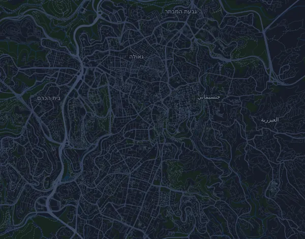

Winner Jerusalem Marathon – Marathon 42.2 km
- Distancia
- 43 km
- Desnivel positivo
- ↑ 1290 m
- Punto más alto
- 827 m s. n. m.
- Superficie
- Asfalto
- Perfil
- Muy ondulado
- Salida
- 06:30 h
Perfil de altitud
Prepárate con Mila
Mila es un coach de running en una app. Si añades una carrera a tu plan, el coach planifica tus semanas hasta la salida según tu forma y te da un pronóstico de tiempo y un plan de ritmo, hidratación y energía para el recorrido.

La sesión justa. El día justo.
El recorrido

Sobre el recorrido
Winner Jerusalem Marathon – Marathon 42.2 km es una carrera en ruta de 43 km (Jerusalem, Israel). El recorrido acumula 1290 m de desnivel positivo y 1314 m de desnivel negativo, 30 m por km, así que es muy ondulado. El punto más alto está a 827 m sobre el nivel del mar y el más bajo a 718 m.
La subida más grande empieza en el km 15,4: 54 m de desnivel en 1,1 km, con un 4,7 % de media, hasta los 796 m. En total, el recorrido tiene 19 subidas de al menos 25 m; la última empieza en el km 41,5.
En la app Mila, el coach describe el recorrido en detalle en tu idioma y planifica tu ritmo y tu avituallamiento.
Subidas
| Empieza en | Longitud | Desnivel | Pendiente | Cima (m s. n. m.) |
|---|---|---|---|---|
| km 2,2 | 1 km | 34 m | 3,4 % | 783 |
| km 3,5 | 400 m | 25 m | 6,3 % | 800 |
| km 6,2 | 500 m | 33 m | 6,5 % | 764 |
| km 6,8 | 860 m | 27 m | 3,2 % | 782 |
| km 9,2 | 720 m | 46 m | 6,3 % | 807 |
| km 10,0 | 480 m | 29 m | 6,0 % | 825 |
| km 13,4 | 650 m | 35 m | 5,5 % | 792 |
| km 15,4 | 1,1 km | 54 m | 4,7 % | 796 |
| km 17,5 | 390 m | 28 m | 7,1 % | 817 |
| km 18,6 | 450 m | 38 m | 8,4 % | 804 |
| km 23,0 | 360 m | 25 m | 7,0 % | 773 |
| km 23,6 | 580 m | 34 m | 5,8 % | 792 |
| km 24,7 | 310 m | 29 m | 9,3 % | 784 |
| km 26,3 | 640 m | 33 m | 5,2 % | 757 |
| km 27,1 | 1,1 km | 42 m | 4,0 % | 791 |
| km 31,6 | 680 m | 25 m | 3,7 % | 767 |
| km 32,4 | 1,8 km | 34 m | 1,9 % | 781 |
| km 38,6 | 1 km | 53 m | 5,2 % | 782 |
| km 41,5 | 1 km | 25 m | 2,5 % | 755 |
Antes de la salida
Horas de salida
- 06:30 h
Fuente: jerusalem-marathon.com, consultado el 15 de octubre de 2026
Tabla de ritmos
Winner Jerusalem Marathon – Marathon 42.2 km en 3:30:00 – ritmo por km y tiempos de paso
4:53 min/km · km 10: 48:51 · km 20: 1:37:42 · km 30: 2:26:33 · meta: 3:30:00
Winner Jerusalem Marathon – Marathon 42.2 km en 4:15:00 – ritmo por km y tiempos de paso
5:56 min/km · km 10: 59:19 · km 20: 1:58:38 · km 30: 2:57:57 · meta: 4:15:00
Winner Jerusalem Marathon – Marathon 42.2 km en 5:00:00 – ritmo por km y tiempos de paso
6:59 min/km · km 10: 1:09:47 · km 20: 2:19:34 · km 30: 3:29:21 · meta: 5:00:00
Winner Jerusalem Marathon – Marathon 42.2 km en 5:45:00 – ritmo por km y tiempos de paso
8:02 min/km · km 10: 1:20:15 · km 20: 2:40:30 · km 30: 4:00:45 · meta: 5:45:00
Los tiempos suponen un ritmo constante de principio a fin. Es pura aritmética, no un pronóstico: en las subidas, entre la gente y en los avituallamientos el ritmo varía.
Preguntas frecuentes
¿Cuándo es Winner Jerusalem Marathon – Marathon 42.2 km?
Winner Jerusalem Marathon – Marathon 42.2 km se celebra el viernes, 19 de marzo de 2027. Comprueba la fecha y la hora de salida con el organizador.
¿A qué hora sale Winner Jerusalem Marathon – Marathon 42.2 km?
Según el organizador: 06:30 h.
¿Cuánto mide Winner Jerusalem Marathon – Marathon 42.2 km y cuánto desnivel tiene?
La carrera tiene 43 km, con 1290 m de desnivel positivo y 1314 m de desnivel negativo. El punto más alto está a 827 m sobre el nivel del mar.
¿Cómo es el recorrido de Winner Jerusalem Marathon – Marathon 42.2 km?
El recorrido es muy ondulado, con 30 m de desnivel por km de media. Tiene 19 subidas de al menos 25 m; la mayor empieza en el km 15,4: 54 m en 1,1 km. Va de la salida a una meta situada en otro lugar. Se corre sobre asfalto.
¿Cómo reparto el ritmo en Winner Jerusalem Marathon – Marathon 42.2 km?
Busca un esfuerzo constante más que un ritmo constante: deja que el ritmo baje en las subidas, recupéralo cuando el terreno se allane y contente en los primeros kilómetros. Las subidas más grandes empiezan en el km 9,2, km 15,4, km 27,1 y km 38,6. En Mila tienes un plan de ritmo para este recorrido, según tu propia forma.
Más carreras como esta
Más carreras cerca
- Tel Aviv Marathon 2027 – Marathon 42,2 km26 de febrero de 2027 · Tel Aviv, Israel
- Buffalo Stampede 100km (Bright Ultra SkyMarathon)20 de marzo de 2027 · Bright, Australia
- Chianti Ultra Trail by UTMB – Ultra Trail Chianti Castles (UTCC 120K)20 de marzo de 2027 · Radda in Chianti, Italia
Prepárate con Mila
La sesión justa. El día justo.
Los datos proceden del archivo del recorrido y de la información del organizador. Comprueba la fecha, las horas de salida y el reglamento con el organizador.
Mila no está vinculada al organizador ni a los patrocinadores de la carrera, ni está patrocinada o avalada por ellos. Los nombres y las marcas pertenecen a sus propietarios. ¿Organizador o titular de derechos? Solicitar un cambio o la retirada